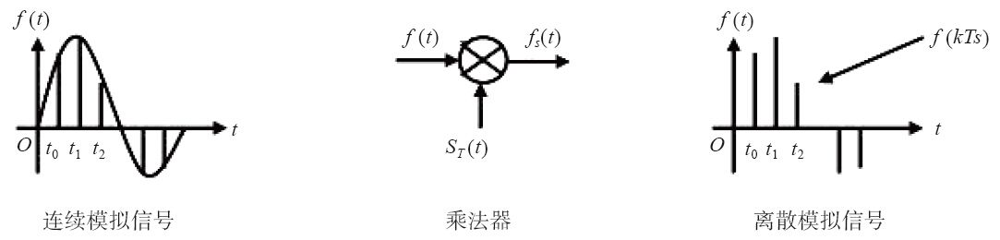

1.2 电话实现技术
电话系统的发展与科技的进步是分不开的。在本节，我们来介绍一些关键的电话技术及专业术语。
1.2.1 电话号码
我们的生活已经离不开电话，而要打电话就离不开电话号码。但好多人对天天使用的电话号码既熟悉又陌生，因此，在这里我们也补充一些现行的电话网中电话号码的知识。值得注意的是，这些号码的出现大部分与业务内容和行政区划有关，也有一些历史背景，但限于篇幅，我们就不深入讨论了。
1.固定电话号码
现行的电话网中采用E.164 [1] 号码格式。以我国固话电话的编号规则为例，我们先来看本地号码。
一般来说，在比较大的省市（如北京、上海等）使用8位号码，比较小的省市使用7位号码。以北京的电话号码为例，它由8位数字组成，表示为ABCD EFGH，其中，ABCDE称为一个千群，即该群可以包含1000个电话号码，同理ABCD称为一个万群。小规模的交换机可能只包含几个千群，而大规模的可能包含几个万群。
如果在不同的省市之间打电话，则称为长途电话，一般需要通过长途局进行路由。打长途电话需要在本地号码前加上长途区号。根据城市的大小不同，我国电话区号的长度一般是2位到3位，如：
10
北京
20
广州
21
上海
755
深圳
535
烟台
读者可能会问，北京的长途区号不是010吗？答案是——“不是！”许多人会错误地认为北京的区号是010，这也正是作者要写这一节的原因。
由于各地区号的长度不同，而且数字也不规则，因此，为了区分长途电话和本地电话，我国规定，在拨打长途电话前除了要加上区号外，还要在最前面加“0”。因此，“0”是国内长途字冠，它本身不是区号的一部分。为了帮助读者理解，我们先考虑国际长途的情况。为了区分国内长途与国际长途，我国规定，国际长途要在国家代码前加两个0。因此，如果拨打美国的号码，如：1-234-567-890，则需要拨00-1-234-567-890。其中，1为美国的国家代码，我们稍后还会讲到。
交换机的拨号规则遵循短号优先的原则，拨号时不加0就认为是本地号码，加一个0就认为是国内长途，两个0是国际长途。我国的国家代码是86，因此，一个北京号码的国际表示是：86 10 ABCD EFGH。
与我国不同，美国的国际长途字冠是011，因此如果从美国拨打中国的号码，则需要拨：011 86 10 ABCD EFGH。
类似的，其他国家和地区也有不同的拨号方式，这增加了电话号码书写的复杂性。因此，在实际书写电话号码时，有时会省略国际长途字冠，而统一用“+”号代替，如：+86 10 ABCD EFGH [2] 。
读到这里，读者就可以理解为什么北京的区号不是010了吧？另外，我们还知道，使用固定电话拨打异地手机时前边要加拨0，同样说明0并不是区号或手机号码的一部分。
2.移动电话号码和专用号段
移动电话号码俗称手机号，由于其可移动与漫游的特性，因此与普通固定电话号码略有不同。众所周知，我国的移动电话号码都是以1开头的，按不同的运营商来划分。如中国移动的号码由135、136、137、138、139等开头；中国联通的由130、186等开头，中国电信的由133、189等开头。它们后面都是8位的号码，因此整个手机号共11位，前3位称为移动电信运营商专用的号段。
在2013年工信部发放虚拟运营商牌照以后，核发170号段作为虚拟运营商的专用号段。
3.短号码
有一类特殊的号码称为短号码，如大家熟知的110、119、120等，这些属于公益性的号码（又称紧急号码，供紧急情况下使用），拨打都是免费的。
还有一部分是预付费的电话卡类业务，如200、201、300等。拨打这类号码本身不收费，而从关联的电话卡上扣费。
另一些短号码，如114等，由于运营商的分拆、合并，有的演变成了116114；还有一些5位的短号码专门供一些大的集团（如银行等）使用，如95555、95588等，这些号码不论何时何地拨打，一般只收市话费。
这些短号码的资源比较紧张，一般不会给个人使用。另外还有其他一些短号码，我们就不多讲了。
4.800和400号码
800开头的号码是被叫付费的业务，主叫呼叫这些号码是免费的。这些号码主要由一些大的企业集团使用。这类号码都是虚拟的电话号码，在实际呼叫过程中通过查询数据库转换成真正的目的号码。
但是800号码有一个致命的缺点，就是用手机打不通，这主要是电信业务的历史原因（主要原因是不同运营商的网间结算）造成的。随着移动业务的发展，手机用户越来越多，因此，出现了400业务。这类业务的特点是主被叫分摊付费，主叫付本地通话费，被叫付长途电话费（如果主被叫不在一个城市）。400业务是手机用户可以呼叫的。
当然，随着时代的发展，以及各运营商提供更加灵活的话务套餐（如主叫免收长途费等），主叫用户对拨打这类号码时对实际资费已不太敏感。拥有800和400之类的电话号码越来越多地成为了企业实力和社会形象的标志。
5.北美电话号码分类计划
为了与国内号码进行对比，我们来简单说一下北美电话号码分类计划（North American Numbering Plan [3] ）。
加拿大和美国使用北美电话号码分类计划，其区号由3位数字组成，本地号码为7位数字，1为长途接入码，即长途字冠（在有的情况下可以省略长途字冠）。比如，一个完整的号码为1（ABC)DEF-GHIJ，如果是在本地拨打，则可以直接拨“DEF GHIJ”，如果是拨打长途，则需要先拨长途字冠1及区号，即：1（ABC)DEF-GHIJ。
值得一提的是，其中的区号ABC如果是555，除555-1212是查号台外，其他的号码都是不存在的。这类号码一般用于电影或戏剧中，防止与真实环境中的电话号码相冲突。
6.电话号码的书写格式
电话号码就是一长串号码，但有时候为了便于阅读，在写的时候常用连字符“-”、括号、空格等将数字分开，如上一节我们看到美国电话号码的格式。
国内电话号码的书写一般采用如下的方式：
（010) ABCD EFGH
（没有国家代码，虽然0
不是区号的一部分，但是，习惯了）
+86
（10) ABCD EFGH
（固话，8
位，国际号码格式）
+86
（535) ABC DEFG
（固话，7
位，国际号码格式）
+86 139 ABCD EFGH
（手机，国际号码格式）
当然，具体的写法没有统一的规定，只要让看到号码的人知道怎么拨打就行了。至于要将电话号码印到名片上，又涉及企业形象设计的问题了，那就另当别论了。
1.2.2 模拟信号与数字信号
模拟（Analog）量是连续的变化的量，如温度、声音等。早期的电话网也是基于模拟交换的。对于人类交流来讲模拟信号是非常理想，但它很容易引入噪声。如果通话双方距离很远，信号会衰减，因而需要对信号进行放大。问题是，信号中经常混入线路的噪声，放大信号的同时也放大了噪声，导致信噪比（信号量与噪声的比例）下降，严重时甚至会难以分辨。
数字（Digital）信号是不连续的（离散的），是按一定的时间间隔（单位时间内抽样的次数称为频率）对模拟信号进行抽样（见图1-6）得出的一些离散值。然后通过量化和编码过程就可将这些离散值变成数字信号。根据抽样定理 [4] ，当抽样频率是模拟信号最高频率的2倍时，就能够完全还原原来的模拟信号。

图1-6 抽样
1.2.3 PCM
PCM（Pulse Code Modulation）的全称是脉冲编码调制。它是一种通用的将模拟信号转换成以0和1表示的数字信号的方法。
一般来说，人的声音频率范围在300~3400Hz之间，通过滤波器将超过4000Hz的频率过滤出去，便得到4000Hz内的模拟信号。然后根据抽样定理，使用8000Hz进行抽样，便得到离散的数字信号。使用PCM方法得到的数字信号就称为PCM信号，一般一次抽样会得到16bit的信息。
为了更有效地在线路上进行传输，通常对PCM信号进行一定的压缩。通过使用压缩算法 [5] ，可以将每一个抽样值压缩到8bit。这样1秒的抽样就得到8bit×8000=64000bit的信号（简称64kbit），抽样速率（即传输速率）为64kbit/s [6] 。
PCM通常有两种压缩方式：A律和μ律。其中北美使用μ律，我国和欧洲使用A律。这两种压缩方法很相似，都采用8bit的编码获得12bit到13bit的语音质量 [7] 。但在低信噪比的情况下，μ律比A律略好。A律也用于国际通信，因此，凡是涉及A律和μ律转换的情况，都由使用μ律的国家负责。
1.2.4 局间中继与电路复用技术
连接交换机（局）的E1或T1电路称为局间中继。交换机间的消息以及通话数据都是在局间中继上传送的，传统的交换机使用时分复用（TDM）技术将多路通话合并到一条数字中继线上，可以大大节省局间中继线的数量。
利用时分复用技术可以将32个64kbit/s的信道合并到一条2Mbit/s（64kbit/s×32=2.048Mbit/s，通俗来说就直接叫一个两兆）的电路上，这样的电路称为一个E1（在北美和日本，是24个64kbit/s复用，称为T1，速率是1.544Mbit/s）。在E1中，每一个信道称为一个时隙。其中，除0时隙固定传同步时钟外，其他31个时隙最多可以同时支持31路电话（有时候会使用第16时隙传送信令，这时最多支持30路电话）。
随着话务量的增加，交换机之间的电路越开越多，因而需要更高级别的电路复用技术。目前通常的做法是将63个E1合并到一个155Mbit/s（2×63+P=155，其中P是电路复用的开销）速率的光路（光纤）上，在SDH（Synchronous Digital Hierarchy，同步数字传输体系）技术中这称为STM-1（Synchronous Transfer Module，同步传输模块）。
当然，155Mbit/s速率的光路还可以使用波分复用等技术合并到1Gbit/s或10Gbit/s速率的光路上，实现话路收敛和传输。
[1] 参见http://en.wikipedia.org/wiki/E.164。
[2] 当然，为了方便阅读，有时还会在电话电码中增加括号和短横线。
[3] 参见http://zh.wikipedia.org/wiki/北美电话号码分类计划。
[4] 又称采样定理或奈奎斯特·香农定理，见http://zh.wikipedia.org/wiki/采样定理。
[5] 实际为压扩法，因为有的部分是压缩的，有的是扩张的。目的是给小信号更多的比特位数以提高语音质量。
[6] bit/s即比特/秒，有时也写作bps（Bit Per Second）。注意，通常，对于二进制数来说K为大写，1K=1024，但此处的k为小写，1k=1000。
[7] 目前我国使用的是A律13折线特性。基本原理是：使用非均匀量化方法和压缩扩张技术得到13段折线。感兴趣的读者可在Google上搜索“13段折线”进行更深入的了解。